Kairos
1. Introduction
In Kairos — The Time Travel Game, players send teams of agents tasked with recovering precious historical articles scattered across 36 time locations — from ancient Egypt and King Arthur's Glastonbury to the moons of Saturn and the volcanic peaks of far-future Venus.
But time is under threat. Kronos, the relentless antagonist, is stealing powerful artifacts and bending the Timeline toward darkness. Players must work semi co-operatively to restore articles, empower crystals, guard artifacts, and ultimately shift the timeline back toward the light — before Kronos plunges reality into permanent shadow.
2. Game Overview
Players: 1–4 (semi co-operative, with optional AI "Automa" opponents filling empty seats)
Goal: Shift the Timeline above zero and clear all blots from at least one player's record before time runs out.
Core Loop
- Each round, players take turns sending their team of agents to time locations
- Agents travel through time using Travel Dice and recover articles using Recovery Dice
- Recovered items and crystals are brought back to HQ; artifacts are guarded at their location
- At the end of each round, Kronos attempts to steal unprotected artifacts, empower those it holds, and drag the timeline toward darkness
- Players counter Kronos by depositing crystals at HQ (which boost the Timeline each round) and empowering those crystals with agents at HQ
The Tension: The timeline starts at -5 (in shadow). Players must raise it above zero while also clearing their blots — a personal karma record that tracks their impact on the timeline.
3. Components
The Time Field
A hexagonal grid of 37 tiles (36 Time Locations + 1 central Time Vortex), randomly arranged each game. Each tile represents a point in history or the future where articles can be found.
Agents
Each player controls multiple agents — their teams in the field. Agents travel to time locations, recover articles, and carry items back to HQ to restore them to their correct location. The number of agents and starting TimeLords varies by player count (see Section 4).
Articles (36 total)
- 12 Items — Historical curiosities (e.g. Crown Jewels, Shakespeare's Quill, Tesla's Coil Fragment)
- 12 Crystals — Precious gems from future worlds (e.g. Amethyst, Emerald, Sapphire)
- 12 Artifacts — Legendary relics of great power (e.g. Holy Grail, Excalibur, Arc of Covenant)
Dice
- Travel Dice — Up to 10 dice used for time travel attempts (4 core + conditional bonus dice including Portal, Adjacent, TimeLord, Hazard, Age, and Alpha)
- Recovery Dice — Up to 8 dice used for article recovery missions (5 core + conditional bonus dice including TimeLord, Hazard, and Alpha)
Event Cards
- Travel Event Deck (40 cards) — Drawn during time travel on certain dice faces
- Recovery Event Deck (18 cards) — Drawn during recovery missions on certain dice faces
Trackers
- Timeline: Shared tracker ranging from -15 to +15
- Paradox Counter: Starts at 5; affects time collapse checks
- Round Counter: Tracks current round toward the maximum
- Kairos (⭐): Per-player resource representing temporal energy
- Blots (⬛): Per-player karma penalty — must reach 0 to win
4. Setup
By Player Count
The total number of "seats" (human players + Automa AI) determines the setup configuration:
| Total Seats | Agents per Player | Starting TimeLords | Starting Blots | Max Rounds (Standard) |
|---|---|---|---|---|
| 1 | 12 | 4 | 14 | 14 |
| 2 | 6 | 2 | 13 | 14 |
| 3 | 4 | 1 | 12 | 13 |
| 4 | 3 | 1 | 11 | 13 |
Starting Kairos (⭐): Compensates for turn order disadvantage.
- Player 1 (first to act): 0⭐
- Player 2: 1⭐
- Player 3: 2⭐
- Player 4: 3⭐
Initial State
- Timeline: Starts at -5 (deep in shadow territory)
- Paradoxes: Start at 5
- Round: Starts at 0 (first Kronos phase after round 1)
- TimeLords: Each player begins with the number of TimeLords shown in the setup table. Agents use military-style callsigns (e.g. T1Alpha, T1Bravo, T2Charlie, etc.). All other agents start as regular agents.
- All agents begin at their player's HQ.
Board Setup
- Time Field: 37 hexagonal tiles are randomly placed on the hex grid. The Time Vortex is always placed at the centre (Ring 0). The 36 Time Locations fill the remaining positions across Rings 1–3.
- Articles: Artifacts and Crystals start at their correct Time Location. Items are scattered randomly to "past era" Time Locations (not their correct location).
- Portals: 12 random Time Locations are designated as active portals (marked on the board).
- Crystal-Artifact Pairing: Each crystal is randomly paired 1:1 with an artifact. This pairing determines the "nerfing" mechanic (see Section 10).
- Event Decks: Both the Travel and Recovery event decks are shuffled.
5. Turn Structure
Round Flow
Each round consists of:
- Player Turns — Each human player takes a turn (in player order)
- Automa Turns — All AI players resolve automatically (if present)
- Early Win Check — If the Timeline is above 0 and any player has 0 blots, players win immediately (before Kronos acts)
- Kronos Phase — The automated antagonist acts (see Section 15)
- Post-Kronos Win/Loss Check — Check victory or defeat conditions again after Kronos resolves
Player Turn
On your turn, you may take actions with each of your agents (one action per agent, unless stated otherwise). When finished, press End Turn to pass to the next player.
Warning: If you press End Turn while agents haven't acted, you'll be prompted to confirm. This prevents accidentally wasting agent actions.
6. Agent Actions
Each agent may perform one of the following actions per turn. TimeLord agents who successfully travel to a new location also receive a bonus action to recover or guard an article at their destination (see Section 8).
6.1 Time Travel
Send an agent from their current location to any Time Location on the board. Requires rolling the Travel Dice (see Section 7). On success, the agent moves to the destination. On failure, the agent stays put.
6.2 Recover Article
An agent at a Time Location with an unclaimed article may attempt to recover it using the Recovery Dice (see Section 8). Each agent may attempt recovery up to 1 time per turn at each location.
6.3 Pick Up Article
An agent at a location with an available item or crystal can pick it up and add it to their inventory.
- At HQ: This is a free action (doesn't consume the agent's turn)
- Elsewhere: This consumes the agent's action for the turn
- Carry limit: Regular agents carry up to 2 articles; TimeLords carry up to 3
6.4 Recall to HQ
Return an agent from the field back to their player's HQ. Any articles carried are automatically deposited at HQ (see Section 9). Agents cannot be recalled from Jail, Lost in Time, or if wiped out.
6.5 Empower Crystal
Any agent at HQ can empower one unempowered crystal that has been deposited there.
Immediate rewards:
- +1⭐ Kairos for the player
- -1⬛ Blot if the crystal's paired artifact is currently held by Kronos
Ongoing effects (until end of round):
- The empowered crystal receives a +3 bonus to its Crystal Light 2d6 roll during the Kronos phase, and contributes +2 Timeline on success (instead of +1)
- The paired artifact is "nerfed" — Kronos cannot steal, empower, or apply timeline control with it this round. However, nerfing requires a successful 2d6 roll minus the crystal's depletion count ≥ 4. A fresh crystal has a 92% chance; a heavily depleted crystal may have as little as 17%. If the nerf roll fails, the empowerment still applies but the artifact is NOT nerfed and no blot reduction is granted (see Section 10 for full details)
Important: Empowerment lasts only until the end of the current round. Crystals must be re-empowered each round to maintain the nerfing protection and Crystal Light roll bonus.
6.6 Attempt Vortex (TimeLord only)
A TimeLord agent at the Time Vortex (centre hex) may attempt to switch off the Vortex — a high-risk, high-reward action (see Section 11).
6.7 Rescue from Lost in Time (TimeLord only)
A TimeLord agent at HQ can rescue one allied agent that is Lost in Time. Both agents consume their turn for the round. The rescued agent returns to HQ with no penalty.
6.8 Escape Jail / Lost in Time
Agents trapped in Jail or Lost in Time must attempt to escape (see Sections 12–13).
6.9 Skip Agent
Choose to have an agent take no action this turn.
7. Time Travel
To travel through time, select an agent and a destination Time Location, then roll the Travel Dice.
Travel Dice
| Die Colour | Name | Faces | Purpose |
|---|---|---|---|
| Green | Base Time | 1, 1, 1, 1, 0, ★ | Always required (must show "1") |
| Black | Direction | 2, 2, 3, X, 0, ★ | Direction: 2=past, 3=future; X=skull |
| White | Planet | 5, 5, 4, X, 0, ★ | 5=Earth location, 4=off-world (space/moon) |
| Orange | Ring | 6, 6, 7, 8, X, 0 | Must match destination's ring (6=R3, 7=R2, 8=R1); X=skull. Vortex (Ring 0) has no dedicated face — requires wilds. |
| Blue | Portal | ★, ★, ★, ★, 0, X | Bonus die if destination is an active portal |
| Yellow | Adjacent | !, !, ★, ★, 0, ★ | Bonus die if adjacent; ! = negate (cancels one skull) |
| TL | TimeLord | ★, ★, ★, ★, 0, 0 | Bonus die (TimeLord agents only) |
| Hazard | Baal | +, +, 0, 0, 0, 0 | Penalty die when timeline ≤ −6 (non-TimeLords only); + = Time Travel Sickness (miss next turn) |
| Purple | Age | ↑, ↓, 0, 0, 0, 0 | Always included for all agents (including TimeLords). ↑ = ageing check, ↓ = sickness check. See Aging. |
| Purple | Alpha | ★, ★, 0, 0, 0, 0 | Bonus die for AutoAlpha variant agents only; 2 wilds, 4 blanks |
Special Face Values
- ★ (Wild): Can satisfy any one requirement. Wilds only convert to specific requirements on the final roll.
- X (Skull): Automatically locked. Cannot be unlocked. If 2 or more skulls are locked, the travel attempt instantly fails (a skull failure event is drawn).
- ! (Negate): Cancels one locked skull, unlocking both the skull die and the negate die for re-roll. Found on the Adjacent (Yellow) die.
- + (Hazard Cross): Triggers Time Travel Sickness — the agent misses their next turn. Found on the Hazard (Baal) die.
- 0 (Blank): No value — contributes nothing.
Hazard Die (Baal)
When the Timeline drops to −6 or below, all non-TimeLord agents receive an extra Hazard die on travel rolls. This die has 2 hazard cross (+) faces and 4 blanks. If a hazard cross is rolled, the agent suffers Time Travel Sickness and misses their next turn (regardless of whether the travel succeeds or fails). TimeLord agents are immune to the Hazard die.
Travel Requirements
To successfully travel, you need to lock dice showing:
- Ring face — matching the destination ring: 6=Ring 3, 7=Ring 2, 8=Ring 1 (always required)
- Base "1" — from the Green die (always required)
- Planet face — matching the destination type: "5" for Earth locations, "4" for off-world (always required)
- Direction face — "2" for travelling to the past, "3" for travelling to the future (required only if origin and destination are in different eras)
Vortex note: The Ring die has no "9" face — it was replaced by a skull. Travelling to the Time Vortex (Ring 0) requires wilds to satisfy the ring requirement, making it one of the hardest destinations to reach.
Bonus & Conditional Dice
- Portal die (Blue): Added if the destination is an active portal. Mostly wilds — pure bonus.
- Adjacent die (Yellow): Added if the destination is exactly 1 hex away. Wilds and negates — pure bonus.
- TimeLord die (TL): Added if the travelling agent is a TimeLord. Mostly wilds — significant advantage.
- Age die (Purple): Always included for all agents. Does not contribute to travel requirements — resolved separately for aging/sickness checks (see Aging).
- Hazard die (Baal): Added when timeline ≤ −6, for non-TimeLord agents only (see above).
- Alpha die (Purple): Added for AutoAlpha variant agents only. 2 wilds, 4 blanks.
Rolling Procedure
- Roll all applicable dice
- Skulls auto-lock immediately (and cannot be unlocked)
- Check for 2+ skulls — if so, travel fails instantly
- Lock any dice you wish to keep; unlock dice you want to re-roll
- Wilds (★) auto-lock (they're always beneficial)
- Roll again (up to 4 total rolls)
- On the final roll, all remaining dice count toward requirements (locked or not), and wilds are assigned to best-fit requirements
- If all requirements are met → Success! Agent moves to destination
- If not → Failure. Agent stays at current location
Aging & Sickness (Age Die)
The Age die (purple) is included in every travel roll for all agents, including TimeLords. It has 1 ageing face (↑), 1 sickness face (↓), and 4 blanks. The Age die does not contribute to travel requirements — it is resolved separately.
Age Progression
Each agent tracks an age state that progresses through four stages:
Child → Youth (starting age) → Adult → Old
Ageing Face (↑)
When the ↑ face appears, roll 1d6:
| d6 | Result |
|---|---|
| 1 | Age up — agent moves one step toward Old (e.g. Youth → Adult) |
| 2 | De-age — agent moves one step toward Child (e.g. Adult → Youth) |
| 3–6 | No effect |
Sickness Face (↓)
When the ↓ face appears, roll 1d6:
| d6 | Result |
|---|---|
| 1–2 | Time Sickness — agent misses their next turn |
| 3–6 | No effect |
Zerotime (Age Overflow)
If an agent is already at Old and ages up, or is already at Child and de-ages, they enter Zerotime — a temporal overflow state. When this happens:
- The agent's turn ends immediately (all remaining agents for that player also lose their actions for the turn)
- At the start of the player's next turn, the agent automatically resets to Youth
Note: Zerotime does not kill the agent — it is a temporary state. However, the turn-ending penalty is severe since it affects all of the player's remaining agents for that turn, not just the one who overflowed.
Archetype Avatars
When using Archetype avatars (an avatar option), agents do not track age. Instead, any non-blank Age die face automatically triggers a miss-a-turn penalty with no d6 check.
Travel Events
If a skull (X) face appears during travel, a Travel Event Card may be drawn (see Section 14).
8. Article Recovery
When an agent is at a Time Location containing an article, they may attempt to recover it using the Recovery Dice.
Recovery Dice
| Die Colour | Name | Faces | Notes |
|---|---|---|---|
| Red | Red | A, S, C, P, M, $ | $ = Draw recovery event |
| Blue | Blue | A, S, C, P, $, H | $ = Draw recovery event |
| Green | Green | A, S, C, P, ★, H | ★ = Wild |
| Black | Black | ★, S, C, P, $, H | ★ = Wild; $ = Draw event |
| White | White | A, S, C, P, M, ★ | ★ = Wild |
| TL | TL | M, C, P, H, ★, ★ | TimeLord bonus (2 wilds!) |
Recovery Factors
Each article requires specific specialist factors to be recovered. The six factor types are:
| Code | Specialist | Colour | Description |
|---|---|---|---|
| A | Archaeology | Yellow | Archaeological and archival expertise |
| S | Security | Red | Physical security and protection |
| C | Cyber | Green | Cyber security and code-breaking |
| P | Psychic | Blue | Psychic defence and mental warfare |
| M | Medical | Magenta | Medical support and emergency care |
| H | Historian | White | Historical research and cultural knowledge |
Recovery Templates
| Template | Factors | ⭐ | ⬛ | Used By |
|---|---|---|---|---|
| Minor Item | M, P, S | 4 | 1 | Antikythera, Da Vinci's Compass, Henry VIII Armour, Maltese Falcon, Shakespeare's Quill, Viking Runestone |
| Major Item | A, H, M, S | 5 | 2 | Babylonian Tablet, Schrödinger's Cat, Shambhala Passport, Tesla's Coil Fragment, Tesseract Cube |
| All Factors | A, C, H, M, P, S | 8 | 2 | The Crown Jewels |
| Crystal | C, M, P, S | 3 | 1 | All 12 crystals |
| Key Artifact | A, H, M, P | 6 | — | Arc of Covenant, Devil's Chair, Excalibur Sword, Holy Grail |
| Minor Artifact | A, P, S | 4 | — | Chintamani Stone, Crystal Skull, Jade Monkey, King Solomon's Ring, Nefertiti's Amulet, Seal of Solomon, Spear of Destiny, Staff of Osiris |
Rolling Procedure
- Roll all applicable recovery dice (5 standard + TL die if agent is TimeLord)
- Lock dice matching required factors
- $ faces trigger a Recovery Event draw (see Section 14)
- Re-roll unlocked dice (up to 4 total rolls)
- Wilds (★) only count toward requirements on the final roll
- If all required factors are matched → Success!
- If not → Failure. Article remains unclaimed at the location
Recovery Outcomes
On Success:
- Items & Crystals: Added to the agent's inventory (they carry it)
- Artifacts: The artifact is marked as "guarded" at its location (it stays on the tile, but is now protected from Kronos — see Section 15). The player earns the artifact's Kairos (⭐) value.
On Failure:
- The article remains at the Time Location, unclaimed and unguarded
9. Article Types & Restoring
Items (12 total)
Historical curiosities scattered to random past-era Time Locations at game start. When recovered, items are carried by the agent and must be brought back to HQ to be restored (deposited). Restoring an item at HQ awards its Kairos (⭐) value, removes its Blot (⬛) value, and reduces the Paradox counter by 1.
| Item | ⭐ Kairos | ⬛ Blots | Template | Required Factors |
|---|---|---|---|---|
| Antikythera | 4 | 1 | Minor | M, P, S |
| Babylonian Tablet | 5 | 2 | Major | A, H, M, S |
| Da Vinci's Compass | 4 | 1 | Minor | M, P, S |
| Henry VIII Armour | 4 | 1 | Minor | M, P, S |
| Maltese Falcon | 4 | 1 | Minor | M, P, S |
| Schrödinger's Cat | 5 | 2 | Major | A, H, M, S |
| Shakespeare's Quill | 4 | 1 | Minor | M, P, S |
| Shambhala Passport | 5 | 2 | Major | A, H, M, S |
| Tesla's Coil Fragment | 5 | 2 | Major | A, H, M, S |
| The Crown Jewels | 8 | 2 | All | A, C, H, M, P, S |
| Tesseract Cube | 5 | 2 | Major | A, H, M, S |
| Viking Runestone | 4 | 1 | Minor | M, P, S |
Crystals (12 total)
Precious gems found at future Time Locations (space stations, moons, and distant planets). Crystals start at their correct Time Location. When recovered and brought to HQ, crystals are deposited — the player earns the crystal's Kairos (⭐) value and removes its Blot (⬛) value. Deposited crystals contribute to Crystal Light each round during the Kronos phase (each crystal rolls 1d6; on 4+ it adds +1 Timeline). Crystals can also be empowered by TimeLord agents for a roll bonus (see Section 6.5).
| Crystal | ⭐ Kairos | ⬛ Blots | Required Factors | Location |
|---|---|---|---|---|
| Amethyst | 3 | 1 | C, M, P, S | Mt Fuji (2157 AD) |
| Beryl | 3 | 1 | C, M, P, S | Ganymede (2184 AD) |
| Chalcedony | 3 | 1 | C, M, P, S | Saturn Rings (2163 AD) |
| Chrysolite | 3 | 1 | C, M, P, S | Venus (2183 AD) |
| Chrysoprasus | 3 | 1 | C, M, P, S | Ceres (2124 AD) |
| Emerald | 3 | 1 | C, M, P, S | Ceres (2125 AD) |
| Jacinth | 3 | 1 | C, M, P, S | Neptune (2103 AD) |
| Jasper | 3 | 1 | C, M, P, S | Venus (2153 AD) |
| Sapphire | 3 | 1 | C, M, P, S | Ganymede (2154 AD) |
| Sardius | 3 | 1 | C, M, P, S | Mt Shasta (2164 AD) |
| Sardonyx | 3 | 1 | C, M, P, S | Neptune (2169 AD) |
| Topaz | 3 | 1 | C, M, P, S | Saturn Rings (2133 AD) |
Artifacts (12 total)
Legendary relics of immense power. Artifacts start at their correct Time Location. Unlike items and crystals, artifacts are NOT carried — they are guarded in place after successful recovery. Guarding an artifact awards its Kairos (⭐) value, protects it from Kronos' theft attempts, and is one of the two prerequisites for TimeLord upgrades.
| Artifact | ⭐ Kairos | Template | Required Factors | Location |
|---|---|---|---|---|
| Arc of Covenant | 6 | Key | A, H, M, P | Giza Pyramids (2108 BC) |
| Chintamani Stone | 4 | Minor | A, P, S | Lhasa (1275 AD) |
| Crystal Skull | 4 | Minor | A, P, S | Mesoamerica (1520 AD) |
| Devil's Chair | 6 | Key | A, H, M, P | Pergamon (1941 AD) |
| Excalibur Sword | 6 | Key | A, H, M, P | Glastonbury (512 AD) |
| Holy Grail | 6 | Key | A, H, M, P | South of France (78 AD) |
| Jade Monkey | 4 | Minor | A, P, S | Xian (221 BC) |
| King Solomon's Ring | 4 | Minor | A, P, S | Jerusalem (612 BC) |
| Nefertiti's Amulet | 4 | Minor | A, P, S | Akhetaten (1330 BC) |
| Seal of Solomon | 4 | Minor | A, P, S | Jerusalem (970 BC) |
| Spear of Destiny | 4 | Minor | A, P, S | Jerusalem (33 AD) |
| Staff of Osiris | 4 | Minor | A, P, S | Thebes (1250 BC) |
Restoring Articles at HQ
When an agent carrying items or crystals returns to HQ (via Recall or travel), those articles are automatically deposited/restored:
- The player earns the article's Kairos (⭐) value
- The article's Blot (⬛) value is removed from the player's record
- Items restored also reduce the Paradox counter by 1 per item — a vital way to slow time collapse
- Crystals deposited at HQ contribute to Crystal Light each Kronos phase
- Items and crystals are tracked as "restored" on the player's record
Item Restore at Correct Location
Items can also be restored in the field by travelling to their correct Time Location while carrying them. When an agent arrives at a Time Location that matches an item's correct_tl, the item is automatically restored there — awarding the same Kairos, Blot removal, and Paradox reduction as an HQ deposit. This allows strategic field restores without returning to HQ first.
10. TimeLord Upgrades & Nerfing
Starting TimeLords
The number of starting TimeLords depends on player count (see Section 4 setup table). In a 1-player game you begin with 4 TimeLords; in a 2-player game, 2 each; in 3–4 player games, 1 each. TimeLords use military-style callsigns (e.g. T1Alpha, T1Bravo). All other agents start as regular agents.
Upgrading to TimeLord
A regular agent can be upgraded to TimeLord status when both of the following conditions are met:
- The player has deposited at least one crystal at HQ
- The player has guarded at least one artifact in the field
When both conditions are satisfied, the next time an agent performs a qualifying action (guarding an artifact or depositing a crystal), one of the player's regular agents is automatically upgraded.
Agent Kairos (Experience) & Upgrade Threshold
Each agent tracks their own agent kairos — cumulative experience earned through actions in the field. When an agent accumulates 8 or more agent kairos while at HQ, they are eligible for automatic upgrade to TimeLord (if the player meets the crystal + artifact prerequisites above).
How agents earn experience:
| Action | Agent XP Earned |
|---|---|
| Successful time travel | +1 |
| Pick up an article (at HQ) | +1 |
| Successful recovery (item or crystal into inventory) | +1 |
| Guard an artifact | +artifact's ⭐ Kairos value |
| Deposit a crystal at HQ | +crystal's ⭐ Kairos value |
| Restore an item at HQ or correct location | +item's ⭐ Kairos value |
| Empower a crystal | +1 |
Note: Agent experience is tracked per agent, not per player. An agent that travels frequently and recovers articles will accumulate experience faster than one that stays at HQ. This encourages spreading work across your team rather than relying on a single agent for all field operations.
TimeLord Benefits
- Extra Travel Die: The TL die (mostly wilds) is added to travel rolls
- Extra Recovery Die: The TL die (2 wilds) is added to recovery rolls
- Increased Carry Capacity: Can carry 3 articles (instead of 2)
- Empower Crystals: Can empower deposited crystals at HQ (see Section 6.5)
- Attempt Vortex: Can attempt to switch off the Time Vortex (see Section 11)
- Rescue Lost Agents: Can rescue an allied agent from Lost in Time (see Section 6.7)
Nerfing — Crystal-Artifact Defence
Each crystal is randomly paired with one artifact at game start. When an agent empowers a crystal (see Section 6.5), its paired artifact becomes "nerfed" for the remainder of the round.
Nerfed artifacts are completely immune to Kronos:
- Kronos cannot steal a nerfed artifact (skipped in Phase 1)
- Kronos cannot empower a nerfed artifact (skipped in Phase 2)
- Kronos cannot apply timeline control with a nerfed artifact (skipped in Phase 3)
Nerf Dice Roll
Nerfing requires a successful dice roll. When an agent empowers a crystal, the empowerment always succeeds (granting the ⭐ Kairos and Crystal Light bonus), but the nerfing of the paired artifact depends on a 2d6 roll minus the crystal's depletion count. A result of 4 or higher is required for the nerf to take effect.
| Crystal Depletion | Nerf Roll Needed | Success Chance | Visual |
|---|---|---|---|
| Fresh crystal (0 depletion) | 2d6 ≥ 4 | 92% | |
| Slightly depleted (1) | 2d6 − 1 ≥ 4 | 83% | |
| Depleted (2) | 2d6 − 2 ≥ 4 | 72% | |
| Depleted (3) | 2d6 − 3 ≥ 4 | 58% | |
| Heavily depleted (4) | 2d6 − 4 ≥ 4 | 42% | |
| Heavily depleted (5) | 2d6 − 5 ≥ 4 | 28% | |
| Heavily depleted (6+) | 2d6 − 6 ≥ 4 | 17% |
If nerf fails: The empowerment still happens (the crystal gets its Crystal Light bonus and the player earns +1⭐ Kairos), but the paired artifact is NOT nerfed and no blot reduction is granted from the Kronos-held artifact bonus. This makes crystal depletion a serious long-term threat.
Strategic bonus: If the paired artifact is currently held by Kronos when you empower the crystal, you gain -1⬛ Blot in addition to the standard +1⭐ Kairos reward (only if the nerf roll succeeds).
Important: Empowerment and nerfing last only until the end of the current round. All empowered/nerfed flags are cleared during end-of-round cleanup. You must re-empower each round to maintain protection.
11. The Time Vortex
The Time Vortex sits at the centre of the Time Field (Ring 0). It is a dangerous anomaly that Kronos exploits. Only a TimeLord agent at the Vortex can attempt to switch it off.
Vortex Attempt
Roll 2d6 and calculate:
Result = 2d6 + (your empowered crystals) − (Kronos' empowered artifacts)
| Result | Outcome |
|---|---|
| ≥ 9 | SUCCESS! Vortex is switched off. Gain +10⭐ Kairos and remove 3⬛ Blots. Vortex is locked (max_rounds cannot decrease further from time collapse). |
| 5 – 8 | No effect. The Vortex resists. Agent remains at the Vortex. |
| ≤ 4 | WIPE! The agent is destroyed. Agent is moved to DEAD status. |
Maximum agents at Vortex: Only 3 agents can be at the Vortex simultaneously.
12. Xanadu Jail
Agents can be sent to Xanadu Jail by Travel Event cards or Recovery Event cards. Jailed agents cannot take normal actions — they must attempt to escape.
Escape Options
Turns 1–2 in Jail:
| Option | Method | Cost |
|---|---|---|
| A | Roll 2d6 — if doubles, you escape! | −2⭐ Kairos (no blots) |
| B | Bribe Xanadu — instant escape | −3⭐ Kairos, +1⬛ Blot |
| C | Use a KEEP – JAIL event card | Free (card discarded) |
| D | Use a KEEP – WILD event card | Free (card discarded) |
Turn 3+ (Forced):
After 3 failed escape attempts, the agent is forced to pay the bribe and is released automatically.
13. Lost in Time
Agents can become Lost in Time (LIT) through Travel Events or Recovery Events. Lost agents drift through temporal space and must find their way back.
Escape Options
Turns 1–2 in LIT:
| Option | Method | Cost |
|---|---|---|
| A | Roll 1d6 — on a 5 or 6, you escape! | Free |
| B | Use a KEEP – LIT event card | Free (card discarded) |
| C | Use a KEEP – WILD event card | Free (card discarded) |
| D | TimeLord Rescue — a TimeLord at HQ rescues the lost agent | Free (both agents consume their turn) |
Turn 3 (Forced Release):
After 3 turns Lost in Time, the agent is forcibly returned but suffers +1⬛ Blot as a penalty.
On successful escape (dice, card, or TimeLord rescue), the agent returns to their previous location or HQ with no penalty.
14. Event Cards
Travel Events (40 cards)
Drawn when a skull (X) face appears during time travel. Effects include:
| Event Type | Examples |
|---|---|
| Send to Jail | Black Cat Glitch (d6: 1-3 nothing, 4-6 jail), Project Rainbow (all agents jailed) |
| Lost in Time | Quantum Waves, Zero Time, Blinovitch Limitation, Chronovision Failure, OBIT, Philadelphia Time Rift |
| Add Blots | Project Looking Glass (+1), Cloverfield Paradox (+2), Zombie Apocalypse (+3), Sunglasses (+1) |
| Remove Blots | 753/847024/606 (-1), Time Correction (-1), Norikov Self Consistency (-1), Time Capsules (-2) |
| Miss Turn | Heatimo Effect, Tachyon Drive, Time Freak Incident, Primer Paradox |
| Recall to HQ | Teleportation, Time Resolution, Wheels of Time (all agents) |
| Wiped Out | Plasma Confinement (agent destroyed) |
| Gain Kairos | Some choice events offer a chance to gain 1–3 Kairos on a successful d6 roll |
| Upgrade to TimeLord | Kairos Time Master, Xanadu Time Meld, Kurzweil Singularity (all agents!) |
| KEEP Cards | Time Stealth Mode (avoid Jail), Note to Future Self (cancel any event), Larson's Activator (avoid LIT), Fractal Time (wild symbol), Paradox Pill (avoid LIT), Searle Levity Disc (avoid LIT) |
KEEP cards are held in your hand and can be played at the appropriate moment to cancel negative effects. They are discarded after use.
Choice Events
Many events present the player with a choice between two options (e.g. "High risk" vs "Low risk"). Each option may have different outcomes, including d6 rolls with success/fail thresholds. When a choice event fires:
- The dice tray shows the event card with choice buttons
- The agent's current inventory is displayed for context (important for "Lose Inventory" events)
- Options that would cause mission failure (regardless of roll outcome) are marked with a skull icon
- After choosing, a d6 roll may determine the final outcome
- The player must click Continue to acknowledge the result before rolling again
Recovery Events (18 cards)
Drawn when a $ face appears during article recovery. Effects include:
| Event Type | Examples |
|---|---|
| Add Blot | Minor Paradox (+1 blot) |
| Add Requirement | Medical Emergency (Plus M), Firefight (Plus S), Translation Setback (Plus A), Cover Story (Plus H), Cyber Defences (Plus C), Psychic Onslaught (Plus P) |
| Wipe Locked Dice | Ambush (all locked dice unlocked!) |
| Mission Fail | Mission Failure, Mistranslation, Team Gets Lost |
| Lose Inventory | Article stolen during mission |
| Lose Kairos | Temporal Anomaly |
| Send to Jail | Team Arrested |
| Recall to HQ | HQ Recall |
| Miss Turn | Team makes massive blunder |
| Nothing | Nothing happens (lucky!) |
| KEEP – JAIL | Find Authorisation Pass |
Important: When a "Plus" event adds a requirement during recovery, the recovery may continue if you haven't used all your rolls yet. The new factor must also be matched for success.
15. Kronos Phase — End of Round
After all players (and Automa) have taken their turns, Kronos acts. The Kronos phase consists of six sub-phases executed in order:
Phase 1: STEAL
(Begins from Round 1 onward)
Kronos attempts to steal artifacts at all Time Locations. Artifacts at portal locations are targeted at normal odds; artifacts at non-portal locations receive a -5 modifier to the steal roll. For each eligible artifact (not nerfed), Kronos rolls 2d6 + modifiers and steals on 9+:
Roll modifiers:
- +Paradox change: +(current paradoxes − starting paradoxes). As paradoxes rise, Kronos grows stronger.
- +Crystal excess: +max(0, player crystals at HQ − Kronos artifacts held). Hoarding crystals gives Kronos a catch-up bonus.
- −Protection: Agent present = −3, Guarded artifact = −1. Positioning agents still matters.
- −Non-portal: −5 if the artifact's location does not have an active portal.
- +Hard difficulty: +1 on Hard mode.
| Protection Level | Condition | Roll Modifier |
|---|---|---|
| Unprotected | No agent, not guarded | +0 |
| Guarded | Artifact has been guarded | −1 |
| Protected | An agent is present | −3 |
| Non-portal | Location has no active portal | −5 |
Nerfed artifacts (whose paired crystal is empowered) are skipped entirely — Kronos cannot target them.
On a successful steal, the artifact is moved to Kronos HQ and the paradox counter increases by 1.
Phase 2: EMPOWER
For each artifact Kronos holds (that isn't nerfed), Kronos rolls 1d6:
- On 4+: The artifact becomes empowered (deals greater timeline damage in Phase 3)
Phase 3: DARKNESS (Timeline Damage)
For each artifact Kronos holds:
- Empowered artifact: Timeline decreases by 2 (or 3 on Hard difficulty)
- Non-empowered artifact: Timeline decreases by 1 (or 2 on Hard difficulty)
If Kronos holds no artifacts, there is no timeline penalty.
Phase 4: CRYSTAL LIGHT (Timeline Recovery)
For each non-nerfed crystal deposited at any player's HQ, roll 2d6:
- On 9+: The crystal contributes +1 Timeline (base payout), or +2 Timeline if empowered
- Empowered crystals receive a +3 bonus to the roll
- Crystal excess modifier: +1 per (player crystals at HQ minus Kronos artifacts held) — having more crystals than Kronos has artifacts boosts the roll
- Depleted crystals still roll but contribute no Timeline on success (they've been exhausted by overflow)
- Easy difficulty: Each successful crystal contributes +1 extra Timeline
The Timeline is capped at ±15.
Timeline Overflow & Depletion
If the timeline moves beyond the ±15 cap, the excess triggers depletion:
- Negative overflow (below −15): Up to N HQ crystals gain +1 depletion count (N = overflow amount), targeting least-depleted crystals first
- Positive overflow (above +15): Up to N Kronos artifacts gain +1 depletion count
Depleted crystals still roll in Crystal Light but contribute no Timeline — they've been exhausted. This prevents extreme timeline swings from accumulating without consequence.
Phase 5: TIME COLLAPSE (Paradox Check)
Roll 2d6 with adjustments:
- If Timeline = -15: Apply -3 to the roll
- If Timeline = +15: Apply +3 to the roll
If the adjusted roll ≤ paradox count → max_rounds decreases by 1 (time is collapsing faster!)
Floor: Max rounds can never drop below 6 — the timeline always gives players at least 6 rounds.
Exception: If the Vortex has been successfully switched off, max_rounds is locked and cannot decrease.
Phase 6: PORTAL ROTATION
- Discard a number of active portals equal to the total number of players (including Automa)
- Refill back to 12 active portals from the remaining pool
- Every 5 rounds: All discarded portals are recycled back into the available pool
End-of-Round Cleanup
After all six phases:
- All crystal "empowered" flags and artifact "nerfed" flags are cleared (must be re-empowered each round)
- Round counter increments
- All agents' skip_turn and recovery_attempts are reset
16. Portals
Portals are Time Locations that provide a travel bonus. When travelling to a location that has an active portal, the Blue Portal Die is added to your travel dice pool. Since the Portal die has mostly wild (★) faces, portals make travel significantly easier.
- 12 portals are active at any time
- Portals rotate each Kronos phase (see Phase 6 above)
- The Time Vortex is never a portal and cannot be discarded
- Kronos targets artifacts at all locations, but non-portal locations receive a -5 modifier to the steal roll
Strategy tip: Agents stationed at portal locations are well-positioned to both protect artifacts from Kronos and benefit from easier travel to and from those locations.
17. Automa (Solo & AI Players)
Automa are AI-controlled players that fill empty seats in games with fewer than 4 human players. They follow automated decision-making logic:
- Automa turns resolve after all human players have acted
- Automa agents travel, recover articles, deposit crystals, and guard artifacts using simplified AI logic
- Automa receive the same starting blots and kairos as a human in their seat position
- Automa agents can become TimeLords and perform all the same actions as human agents
- Automa can win the game — if an Automa clears its blots to 0 while the Timeline is positive, the team wins
AutoAlpha Variant
AutoAlpha is a stronger Automa variant that receives a Purple (Alpha) bonus die on all time travel and recovery rolls. This die has 3 wild faces and 3 blank faces, giving AutoAlpha agents a significant boost to their success rates and helping them keep pace with human players.
Automa help balance the game for lower player counts, ensuring Kronos faces appropriate opposition and the cooperative challenge remains intact.
18. Winning & Losing
Victory Conditions
Early Player Win (can trigger before the final round):
- The Timeline is above 0 (positive), AND
- At least one player (human or Automa) has 0 blots
Early win is checked twice per round: once after all player/Automa turns (before Kronos acts), and once after the Kronos phase completes. This means clearing your blots during your turn can win the game before Kronos has a chance to drag the timeline down.
End-of-Game Win (when max rounds are reached):
- The Timeline is above 0, AND
- At least one player has 0 blots
Defeat Conditions
Kronos Wins:
- Max rounds reached and Timeline ≤ 0 — darkness has consumed the timeline
Pyrrhic Victory (Game Wins, but no one ascends):
- Max rounds reached, Timeline > 0, but no player has cleared all their blots — the light endures, but no time traveller has achieved enlightenment
How to Clear Blots
- Restore items to HQ — each item removes blots equal to its blot value (typically 1) and reduces paradoxes by 1
- Deposit crystals at HQ — each crystal removes blots equal to its blot value (typically 1)
- Empower crystals when paired artifact is in Kronos — removes 1 additional blot
- Vortex success — removes 3 blots
- Certain event cards reduce blots (Time Correction, Time Capsules, etc.)
- Jail bribe adds 1 blot (be careful!)
Tip: Players who clear their blots to 0 "ascend to the Golden Age." Among winners, Kairos score (Kairos minus Blots) serves as the tiebreaker.
19. Scoring
End Score Cards (Kronos Cards)
During pre-game setup, each player selects an End Score Card. Each card pairs two specific artifacts. At game end, players earn bonus kairos for each time their agents nerfed those artifacts during the game (via crystal empowerment):
| Card | Artifact 1 | Artifact 2 |
|---|---|---|
| Sacred Relics | Arc of Covenant | Holy Grail |
| Solomon's Legacy | King Solomon's Ring | Seal of Solomon |
| Legendary Weapons | Excalibur Sword | Spear of Destiny |
| Egyptian Treasures | Staff of Osiris | Nefertiti's Amulet |
| Mystic Stones | Crystal Skull | Chintamani Stone |
| Dark Relics | Devil's Chair | Jade Monkey |
Scoring: +1 bonus kairos per nerf, maximum 3 per artifact, maximum 6 per card. A random card is pre-selected by default but can be changed during setup.
Final Score
When the game ends, each player's final score is calculated:
Final Score = Kairos (⭐) − Blots (⬛) + End Score Card Bonus
(Minimum score is 0)
Scores are tracked for all players, including Automa. The team's combined performance determines the narrative outcome, but individual scores provide bragging rights and replayability goals. Only players who cleared their blots to 0 can be declared winners — Kairos score is the tiebreaker among them.
Tracked Statistics
- Items restored
- Artifacts guarded
- Crystals deposited
- Crystals empowered
- Timeline contributed (from Crystal Light)
- Final timeline position
- Rounds played
- Kronos articles held at game end
20. Game Options
These options can be configured when creating a new game:
Difficulty
| Level | Effect |
|---|---|
| Easy (0) | Crystal Light +1 extra per successful crystal during Kronos Phase 4 |
| Medium (1) | Standard rules as written |
| Hard (2) | Kronos penalties +1 per artifact (empowered: 3 instead of 2; non-empowered: 2 instead of 1) |
Game Length
| Length | Effect |
|---|---|
| Short | Max rounds -2 from standard |
| Standard | As per setup table |
| Long | Max rounds +2 from standard |
Number of Automa
Add 0–3 AI players to fill empty seats (total seats capped at 4).
Starting Order
- Fixed: Players act in the order they joined
- Random: Player order is shuffled at game start
21. Quick Reference
Key Numbers
| Stat | Value |
|---|---|
| Starting Timeline | -5 |
| Starting Paradoxes | 5 |
| Max Timeline | ±15 |
| Agent carry capacity (regular) | 2 |
| Agent carry capacity (TimeLord) | 3 |
| Max travel dice rolls | 4 |
| Max recovery dice rolls | 4 |
| Skulls to auto-fail travel | 2+ |
| Active portals | 12 |
| Portal rotation (per round) | Remove = total players; refill to 12 |
| Portal pool reset | Every 5 rounds |
| Kronos steal start | Round 1 |
| Kronos empower threshold | 2d6 + crystal excess ≥ 9 |
| TimeLord upgrade threshold | 8 agent kairos (+ crystal deposited + artifact guarded) |
| Agent XP: travel/pickup/recovery | +1 per successful action |
| Agent XP: guard/deposit/restore | +article's ⭐ Kairos value |
| Agent XP: empower crystal | +1 |
| Hazard die trigger | Timeline ≤ −6 (non-TimeLords only) |
| Age die | Always included (all agents). ↑ = age check, ↓ = sickness check |
| Age progression | Child → Youth (start) → Adult → Old → Zerotime (overflow) |
| Ageing check (↑) d6 | 1 = age up, 2 = de-age, 3–6 = nothing |
| Sickness check (↓) d6 | 1–2 = miss next turn, 3–6 = nothing |
| Zerotime penalty | Player's entire turn ends; agent resets to Youth next turn |
| Empower crystal reward | +1⭐ (and -1⬛ if paired artifact in Kronos) |
| Nerf roll: fresh crystal | 2d6 ≥ 4 (92%) |
| Nerf roll: depleted (3) | 2d6 − 3 ≥ 4 (58%) |
| End Score Card max bonus | +6⭐ (3 per artifact, 2 artifacts per card) |
| Vortex success | 2d6 + empowered crystals − Kronos empowered ≥ 9 |
| Vortex wipe | ≤ 4 |
| Vortex reward | +10⭐, -3⬛ |
| Vortex max agents | 3 |
| Jail: doubles escape cost | −2⭐ |
| Jail: bribe cost | −3⭐, +1⬛ |
| Jail: forced bribe after | 3 turns |
| LIT: escape threshold | d6 ≥ 5 |
| LIT: forced release after | 3 turns (+1⬛) |
| Item restore bonus | -1 Paradox per item |
| Easter Egg Crystal upgrade cost | +5⭐ to all opponents OR +N⬛ Blots (N = opponents) |
| Dinosaur spawn threshold | Paradoxes ≥ 10 |
| Dinosaur evasion | Agent: 2d6 ≥ 8 to evade; TimeLord: 2d6 ≥ 6 |
| TimeLord send-back reward | +2⭐ Kairos OR -2⬛ Blots |
| Send-back recall risk | 2d6: 2-6 safe (42%), 7-8 recalled (31%), 9+ recalled + miss turn (28%) |
Turn Order Summary
- Each human player takes a turn (activating agents)
- Automa resolve (if present)
- Check early win (Timeline > 0 and any player at 0 blots)
- Kronos Phase: Steal → Empower → Darkness → Crystal Light → Time Collapse → Portal Rotation
- Check win/loss → Next round
22. Time Locations Reference
Past Era (BC dates)
| TL ID | Location | Date | Article |
|---|---|---|---|
| TL500 | Giza Pyramids | 2108 BC | Arc of Covenant |
| TL502 | Jerusalem | 612 BC | King Solomon's Ring |
| TL524 | Thebes | 1250 BC | Staff of Osiris |
| TL530 | Jerusalem | 970 BC | Seal of Solomon |
| TL531 | Akhetaten | 1330 BC | Nefertiti's Amulet |
| TL532 | Shambhala | 12,345 BC | Shambhala Passport |
| TL533 | Xian | 221 BC | Jade Monkey |
| TL534 | Babylon | 1750 BC | Babylonian Tablet |
| TL535 | Aegean Sea | 1200 BC | Antikythera |
Past/Present Era (AD dates, historical)
| TL ID | Location | Date | Article |
|---|---|---|---|
| TL501 | South of France | 78 AD | Holy Grail |
| TL503 | London | 1120 AD | Henry VIII Armour |
| TL505 | Pergamon | 1941 AD | Devil's Chair |
| TL506 | Bermuda Triangle | 1955 AD | Maltese Falcon |
| TL508 | Glastonbury | 512 AD | Excalibur Sword |
| TL509 | Woodbridge UK | 1980 AD | Schrödinger's Cat |
| TL510 | Jerusalem | 33 AD | Spear of Destiny |
| TL525 | Florence | 1503 AD | Da Vinci's Compass |
| TL526 | New York | 1895 AD | Tesla's Coil Fragment |
| TL527 | Nordic Village | 845 AD | Viking Runestone |
| TL528 | Mesoamerica | 1520 AD | Crystal Skull |
| TL529 | Lhasa | 1275 AD | Chintamani Stone |
| TL536 | London | 1599 AD | Shakespeare's Quill |
Future Era (AD dates, future/space)
| TL ID | Location | Date | Article |
|---|---|---|---|
| TL507 | Tower of London | 2035 AD | Crown Jewels |
| TL511 | Asgard | 2150 AD | Tesseract Cube |
| TL512 | Venus | 2153 AD | Jasper |
| TL513 | Ganymede | 2154 AD | Sapphire |
| TL514 | Saturn Rings | 2163 AD | Chalcedony |
| TL515 | Ceres | 2125 AD | Emerald |
| TL516 | Neptune | 2169 AD | Sardonyx |
| TL517 | Mt Shasta | 2164 AD | Sardius |
| TL518 | Venus | 2183 AD | Chrysolite |
| TL519 | Ganymede | 2184 AD | Beryl |
| TL520 | Saturn Rings | 2133 AD | Topaz |
| TL521 | Ceres | 2124 AD | Chrysoprasus |
| TL522 | Neptune | 2103 AD | Jacinth |
| TL523 | Mt Fuji | 2157 AD | Amethyst |
Special Locations
| Location | Description |
|---|---|
| VORTEX | Time Vortex — centre of the hex grid (Ring 0). TimeLords can attempt to switch it off. |
| JAIL | Xanadu Jail — agents are sent here by event cards. Must escape to act again. |
| LIT | Lost in Time — agents drift through temporal space. Must escape to act again. |
| HQ1–4 | Player Headquarters — home base for depositing articles and empowering crystals. |
| KRONOS | Kronos HQ — where stolen artifacts are held. |
23. Articles Reference
Recovery Factor Key
A = Archaeology · S = Security · C = Cyber · P = Psychic · M = Medical · H = Historian
See the Article Gallery below for all 36 articles with images, stats, and recovery requirements, or the Dice Reference appendix for full recovery factor descriptions.
24. Glossary
| Term | Definition |
|---|---|
| Agent | A player's team of time travellers. Each player controls multiple agents. |
| Article | A collectible game object — items, crystals, or artifacts. |
| Automa | AI-controlled player that fills empty seats in games with fewer than 4 humans. |
| Blots (⬛) | Karma penalties. Must reach 0 for a player to contribute to a team victory. |
| Carry Capacity | Number of articles an agent can hold: 2 (regular) or 3 (TimeLord). |
| Cronovision | An in-game probability display showing Monte Carlo success rates for travel and recovery at each destination. |
| Crystal Light | Timeline increase during Kronos Phase 4 from crystals deposited at HQ. Each crystal rolls 2d6; on 9+ it contributes +1 or +2 Timeline. Empowered crystals get +3 bonus. |
| Depletion | When the timeline overflows beyond ±15, excess triggers depletion on crystals (negative overflow) or artifacts (positive overflow). Depleted crystals roll but contribute no Timeline. |
| Deposit | Returning an item or crystal to HQ, earning its Kairos and removing its Blots. Items also reduce paradoxes by 1. |
| Dinosaur | A time-displaced creature that spawns when paradoxes reach 10+. Tramples non-TimeLord agents. Can be sent back by TimeLords. (Expansion) |
| Easter Egg Crystal | A secretly designated crystal that, when deposited at HQ, enables a fast-track TimeLord upgrade for agents at that HQ. (Expansion) |
| Empowered (Crystal) | A crystal enhanced by an agent at HQ (+1⭐ reward). Receives +3 bonus to its Crystal Light roll and nerfs its paired artifact for the current round. |
| Era | A time period category: Past (BC dates), Present (early AD), Future (far AD/space). |
| Factor | A specialist skill required for article recovery (A, S, C, P, M, or H). |
| Guarded | An artifact that has been successfully recovered (+Kairos reward) — harder for Kronos to steal. |
| HQ | Player Headquarters — home base for depositing articles and performing upgrades. |
| Kairos (⭐) | Temporal energy resource. Earned from recovering articles, empowering crystals, and events. Also tracked per-agent as experience. Agents with 8+ XP at HQ can upgrade to TimeLord. |
| Kronos | The game's automated antagonist who steals artifacts and damages the timeline. |
| LIT (Lost in Time) | A penalty state where an agent drifts through temporal space. Can be rescued by a TimeLord. |
| End Score Card | A Kronos card chosen during setup that pairs two artifacts. Earn bonus kairos (up to +6) at game end for nerfing those artifacts. |
| Hazard Die (Baal) | A penalty die added to travel rolls when the timeline is ≤ −6. Has 2 hazard crosses (miss next turn) and 4 blanks. TimeLords are immune. |
| Timeline | The shared timeline tracker (-15 to +15). Must be positive to win. |
| Nerfed | An artifact whose paired crystal is empowered — Kronos skips it entirely. Requires a successful 2d6 roll minus depletion ≥ 4. Resets each round. |
| Paired | Each crystal is randomly linked to one artifact at game start. Empowering the crystal nerfs the artifact. |
| Paradox | A counter that increases when Kronos steals artifacts and decreases when items are restored. Affects time collapse checks. |
| Portal | A Time Location with a travel bonus (extra Blue die). 12 are active at any time. |
| Recall | Moving an agent from the field back to HQ. Articles carried are auto-deposited. |
| Recovery | The process of securing an article at a Time Location using Recovery Dice. |
| Restored | An item or crystal that has been deposited at HQ. |
| Ring | The hex grid distance from centre: Ring 0 (Vortex), Ring 1–3 (Time Locations). |
| Skull (X) | A negative dice face that auto-locks. 2+ skulls during travel = instant failure. |
| Time Collapse | A Kronos phase check that can reduce max_rounds, shortening the game. |
| Time Field | The hexagonal grid of 37 tiles where the game takes place. |
| TimeLord | An elite agent with bonus dice, increased carry capacity, and special abilities (empower, vortex, rescue). |
| Vortex | The central hex tile. Can be switched off by a TimeLord for a major bonus (+10⭐, -3⬛). |
| Time Travel Sickness | Caused by the Hazard die's cross (+) face. The affected agent misses their next turn. |
| Wild (★) | A dice face that can substitute for any requirement (only on final roll for recovery). |
| Wiped | An agent destroyed (e.g., Vortex failure or Plasma Confinement event). Permanently out of the game. |
| Xanadu | The time police organisation that runs the Jail. |
| Age Die | A purple die included in every travel roll. Has 1 ageing face (↑), 1 sickness face (↓), and 4 blanks. Does not contribute to travel requirements. |
| Zerotime | Temporal overflow state triggered when an agent ages past Old or de-ages past Child. Ends the player's turn immediately; agent resets to Youth at start of next turn. |
| Age State | Each agent's current age: Child → Youth (default) → Adult → Old. Changed by the Age die's ageing face during travel. |
25. Expansion — Easter Egg Crystal Expansion
This optional game module can be enabled during setup. It introduces a hidden element to the crystal recovery game.
Setup
When this expansion is enabled, one of the 12 crystals is secretly and randomly designated as the Easter Egg crystal. Players do not know which crystal holds this designation until it is deposited at a player's HQ.
Revelation
The Easter Egg crystal's identity is revealed the moment it is deposited at HQ. A special notification announces the discovery to all players.
Fast-Track TimeLord Upgrade
Once the Easter Egg crystal has been deposited, any non-TimeLord agent stationed at that HQ may use their action for the turn to immediately upgrade to TimeLord status. This bypasses the normal requirement of 8 agent XP, though it still consumes the agent's action for the turn.
Upgrade Cost (player's choice):
| Option | Cost |
|---|---|
| Kairos Compensation | +5⭐ Kairos awarded to every opponent (players + automata) |
| Accept Blots | +N⬛ Blots to yourself (N = number of opponents) |
Strategic Considerations
- The Easter Egg provides an alternate fast-track to TimeLord upgrades, especially valuable in the early game when crystals from space are first being recovered
- Since the identity is hidden, every crystal recovery carries the exciting possibility of discovering the Easter Egg
- Players must weigh the cost: giving all opponents +5 Kairos is a significant competitive disadvantage, while accepting blots works against the victory condition
- In a 2-player game the blot penalty is +1, making it the obvious choice; in 3–4 player games the tradeoff is harder
- Multiple agents at the same HQ can all take advantage of the Easter Egg crystal across different turns
- The Easter Egg crystal still functions normally as a crystal for Crystal Light, empowerment, and nerfing
Tip: In higher player-count games (3–4 players) where each player starts with only 1 TimeLord, the Easter Egg can be game-changing. Prioritise crystal recovery from space to maximise your chances of finding it early.
26. Expansion — Time-Travelling Dinosaurs Expansion
This optional game module introduces a chaotic new threat: dinosaurs displaced through time by rising paradox levels. Enable it during setup for a wilder, more dangerous game.
Dinosaur Spawning
When the paradox counter reaches 10 or higher, a dinosaur spawns at the Time Vortex (centre hex, Ring 0) at the end of the Kronos phase. Multiple dinosaurs can coexist on the map simultaneously — a new one spawns each time paradoxes hit the threshold while conditions are met.
Dinosaur Movement
During each Kronos phase, every dinosaur on the map performs a two-dice time-jump:
Direction Die (d6)
| Roll | Direction |
|---|---|
| 1 | East (E) |
| 2 | North-East (NE) |
| 3 | North-West (NW) |
| 4 | West (W) |
| 5 | South-West (SW) |
| 6 | South-East (SE) |
Distance Die (d6)
| Roll | Distance |
|---|---|
| 1–3 | 1 hex |
| 4–5 | 2 hexes |
| 6 | 3 hexes |
The dinosaur walks step-by-step in the chosen direction. If it reaches the edge of the hex grid before completing its full distance, it stops at the edge. If it cannot move at all in the chosen direction (already at the edge), the direction die is rerolled (up to 5 times). The dinosaur can land on or pass through the Vortex (Ring 0).
Trampling
Any non-TimeLord agent on a tile the dinosaur passes through or lands on must roll 2d6:
| Roll | Result |
|---|---|
| ≤ 9 | Wiped out! The agent is killed (moved to DEAD status). This covers 83% of outcomes. |
| 10+ | Survived! The agent narrowly dodges the dinosaur. (17% chance) |
TimeLords are immune to trampling — they calmly evade the dinosaur using their temporal mastery.
TimeLord Send-Back
A TimeLord at the same location as a dinosaur can send it back to its original time. This is a free action (does not consume the TimeLord's turn action), but each TimeLord can only perform one send-back per turn.
Send-Back Reward (player's choice):
| Option | Reward |
|---|---|
| Gain Kairos | +2⭐ Kairos |
| Remove Blots | -2⬛ Blots |
Recall Risk
After successfully sending a dinosaur back, the TimeLord must roll 2d6 to determine if the temporal backlash affects them:
| Roll | Result | Probability |
|---|---|---|
| 2–6 | Safe — TimeLord stays at their current location, no penalty | 42% |
| 7–8 | Recalled to HQ — TimeLord is pulled back to their player's HQ | 31% |
| 9+ | Recalled to HQ AND misses turn — TimeLord is pulled back AND cannot act next turn | 28% |
Strategic Considerations
- Dinosaurs add urgency to paradox management — restoring items (which reduce paradoxes) becomes even more critical
- Keeping non-TimeLord agents out of dinosaur paths is essential; consider recalling vulnerable agents when paradoxes are high
- TimeLord send-backs provide a useful source of Kairos or Blot removal, but the recall risk means positioning matters
- Multiple dinosaurs on the map can create dangerous corridors that restrict safe movement
- The Vortex becomes doubly dangerous — both a risky TimeLord action site and a dinosaur spawn point
Warning: This expansion significantly increases game difficulty. It is recommended for experienced players who are comfortable with the base game mechanics. Consider combining with the Easter Egg Crystal expansion to offset the increased threat level with faster TimeLord upgrades.
27. Appendix A — Dice Reference
Complete face listings for every die in the game. See Section 7 for travel rules and Section 8 for recovery rules.
Travel Dice Face Legend
| Symbol | Meaning |
|---|---|
| 1–9 | Numeric value — must match a travel requirement (ring, base, planet, direction) |
| ★ | Wild — substitutes for any one requirement (assigned on final roll) |
| X | Skull — auto-locks; 2+ skulls = instant travel failure |
| ! | Negate — cancels one locked skull (both dice unlocked for re-roll) |
| + | Hazard cross — triggers Time Travel Sickness (miss next turn) |
| ↑ | Ageing check — roll d6 to determine age change (see Aging) |
| ↓ | Sickness check — roll d6 for possible Time Sickness (see Aging) |
| 0 | Blank — no effect |
Travel Dice (all faces)
| Die | Colour | When Included | Face 1 | Face 2 | Face 3 | Face 4 | Face 5 | Face 6 |
|---|---|---|---|---|---|---|---|---|
| Ring | Orange | Always | 6 | 6 | 7 | 8 | X | 0 |
| Direction | Black | Always | 2 | 2 | 3 | X | 0 | ★ |
| Base | Green | Always | 1 | 1 | 1 | 1 | 0 | ★ |
| Planet | White | Always | 5 | 5 | 4 | X | 0 | ★ |
| Age | Purple | Always (all agents) | ↑ | ↓ | 0 | 0 | 0 | 0 |
| Portal | Blue | Destination is a portal | ★ | ★ | ★ | ★ | 0 | X |
| Adjacent | Yellow | Destination is 1 hex away | ! | ! | ★ | ★ | 0 | ★ |
| TimeLord | Teal | Agent is a TimeLord | ★ | ★ | ★ | ★ | 0 | 0 |
| Hazard | Red | Timeline ≤ −6 (non-TimeLords) | + | + | 0 | 0 | 0 | 0 |
| Alpha | Purple | AutoAlpha agents only | ★ | ★ | 0 | 0 | 0 | 0 |
Recovery Dice Face Legend
| Symbol | Meaning |
|---|---|
| A | Archaeology — archival and excavation expertise |
| S | Security — physical protection and defence |
| C | Cyber — cyber security and code-breaking |
| P | Psychic — psychic defence and mental warfare |
| M | Medical — medical support and emergency care |
| H | Historian — historical research and cultural knowledge |
| ★ | Wild — substitutes for any required factor (assigned on final roll) |
| $ | Event — draw a Recovery Event card |
| 0 | Blank — no effect |
Recovery Dice (all faces)
| Die | Colour | When Included | Face 1 | Face 2 | Face 3 | Face 4 | Face 5 | Face 6 |
|---|---|---|---|---|---|---|---|---|
| Red | Red | Always | A | S | C | P | M | $ |
| Blue | Blue | Always | A | S | C | P | $ | H |
| Green | Green | Always | A | S | C | P | ★ | H |
| Black | Black | Always | ★ | S | C | P | $ | H |
| White | White | Always | A | S | C | P | M | ★ |
| TimeLord | Teal | Agent is a TimeLord | M | C | P | H | ★ | ★ |
| Alpha | Purple | AutoAlpha agents only | ★ | ★ | 0 | 0 | 0 | 0 |
• Article Gallery
All 36 articles in the game. A = Archaeology · S = Security · C = Cyber · P = Psychic · M = Medical · H = Historian
Artifacts — Guarded at their location to protect from Kronos

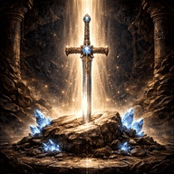
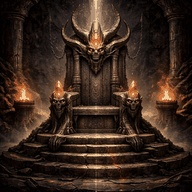
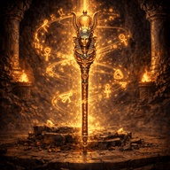

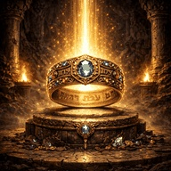


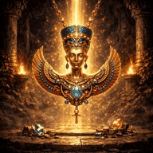

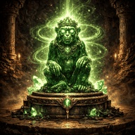
Crystals — Deposited at HQ for Crystal Light Timeline contributions


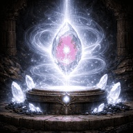
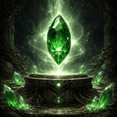
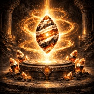


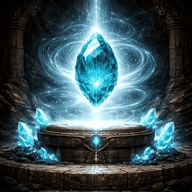

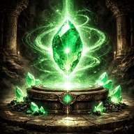


Items — Carried to HQ for restoration

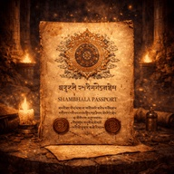
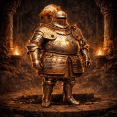


• Time Location Gallery
All 36 Time Locations visualised. Each image depicts the destination as your agents would experience it upon arrival.
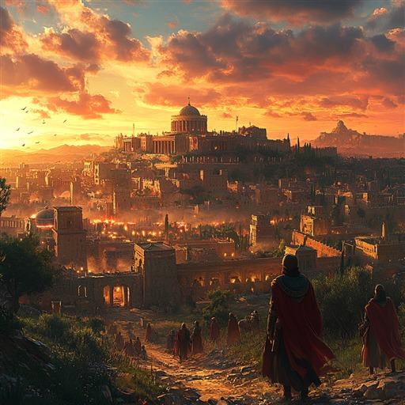
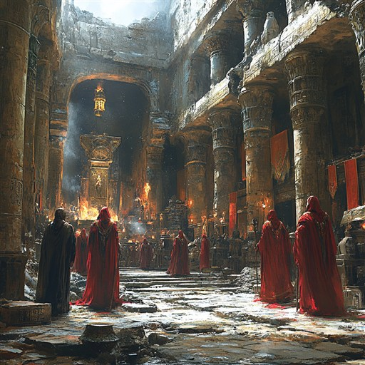
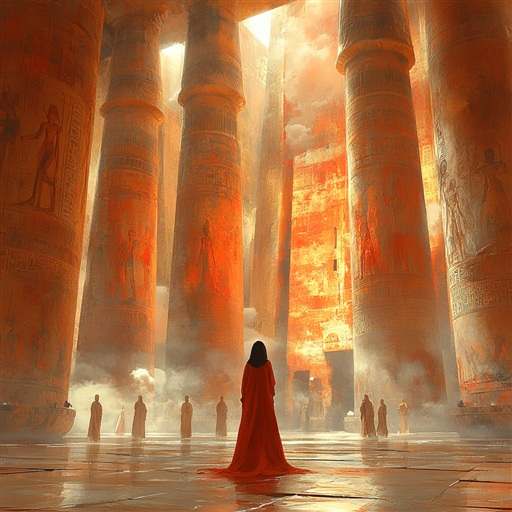
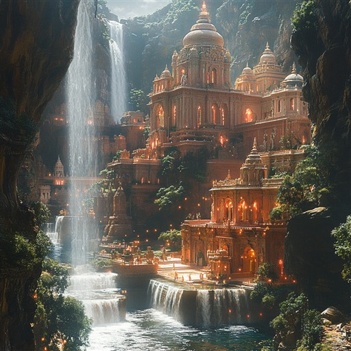
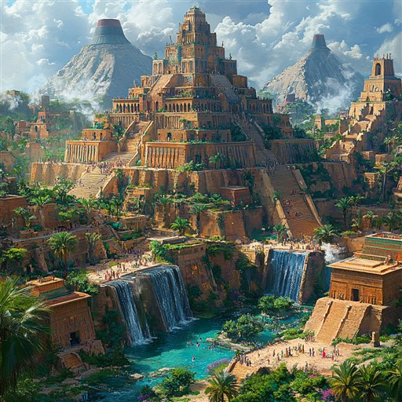
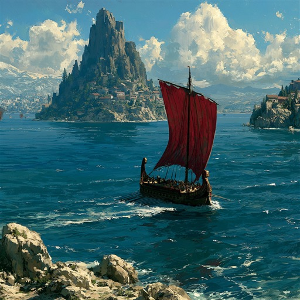
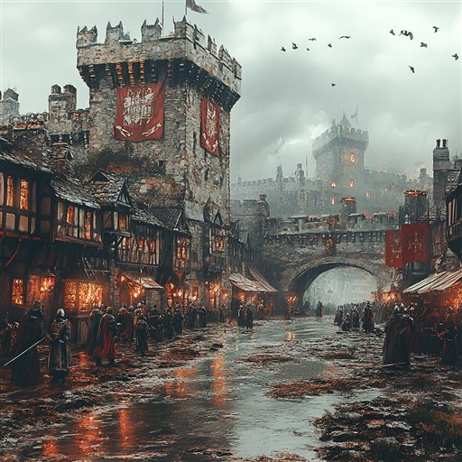
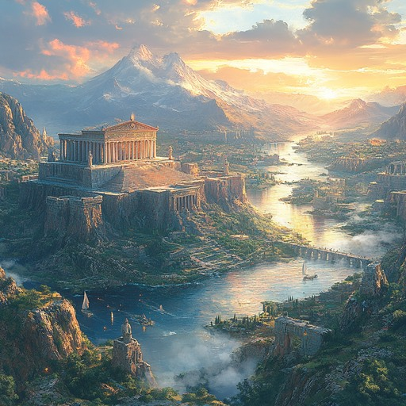
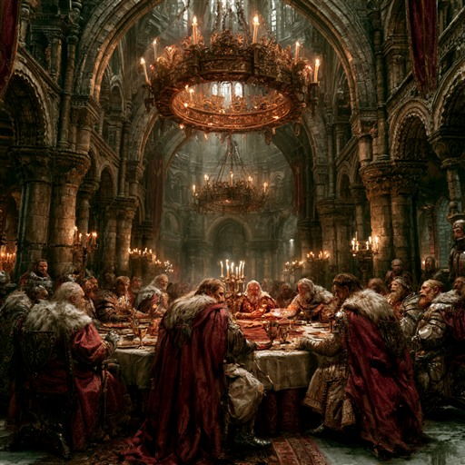
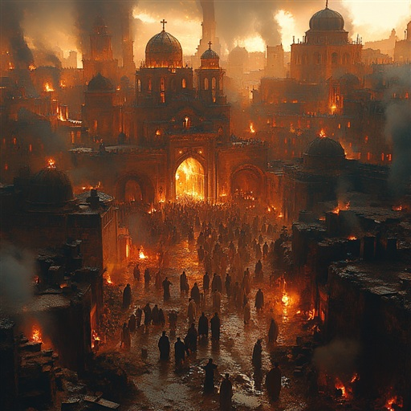
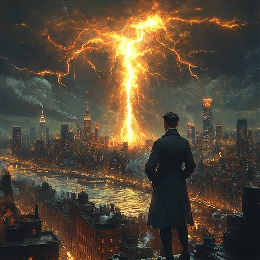
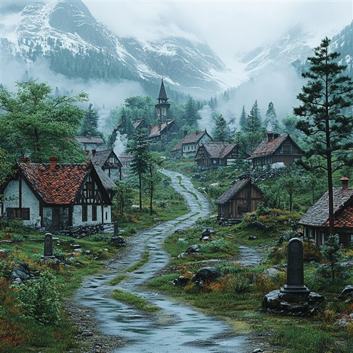
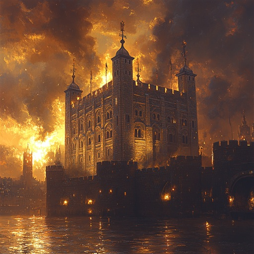
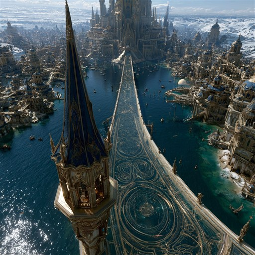
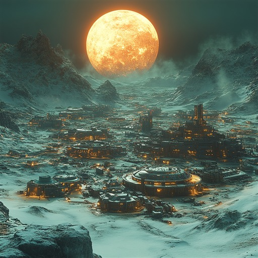
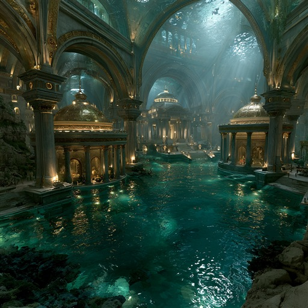